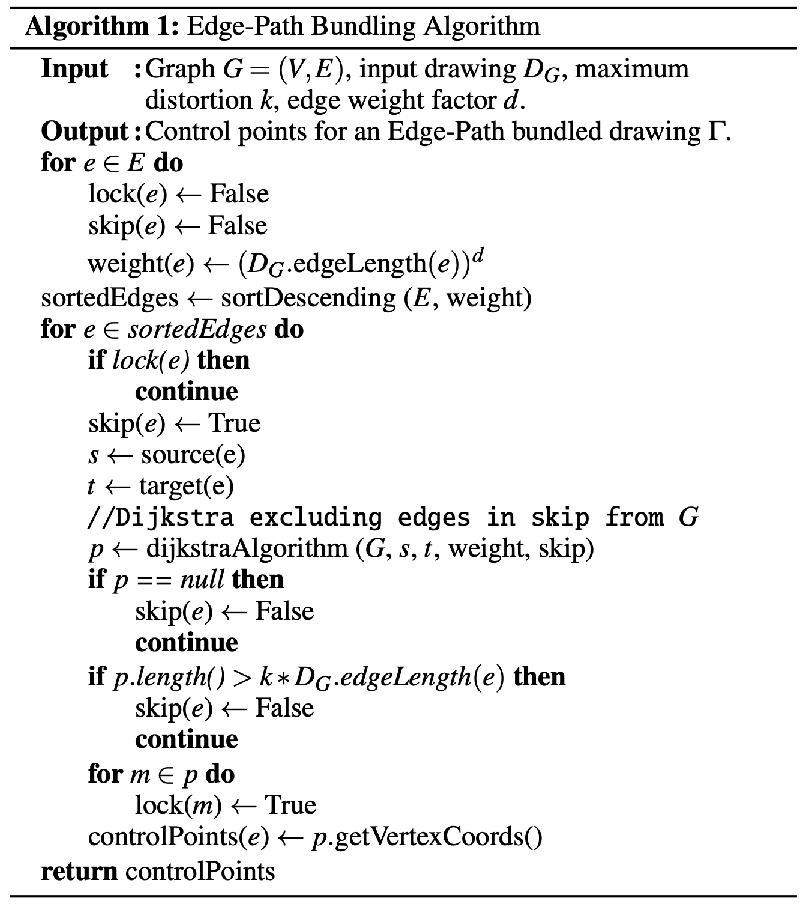
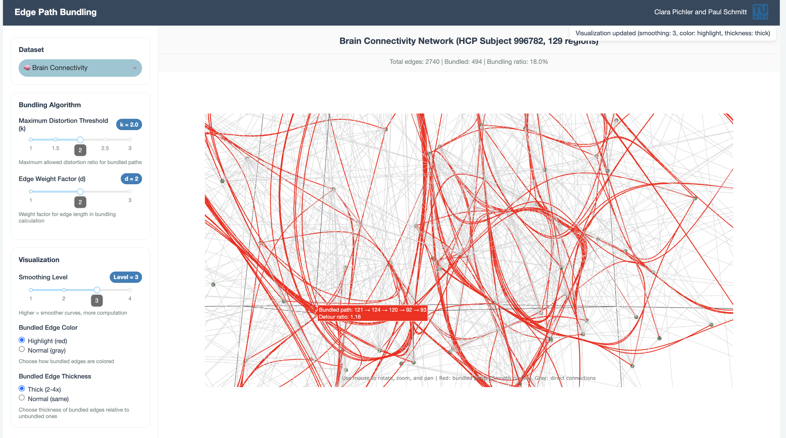
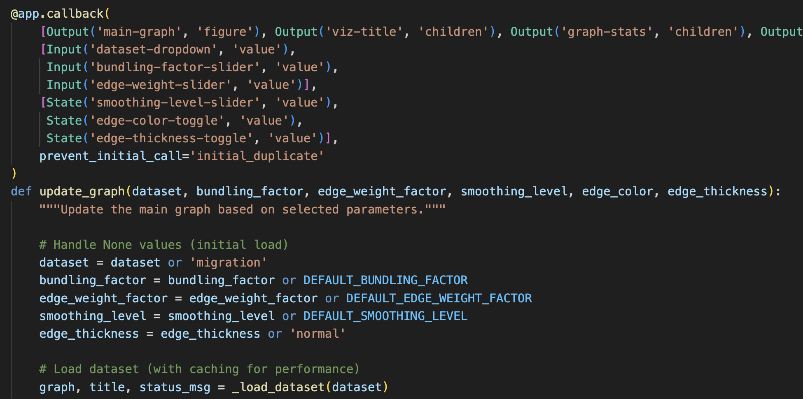

Overview
This is the comprehensive code documentation for the Edge Path Bundling project, which implements the edge bundling algorithm described in "Edge-Path Bundling: A Less Ambiguous Edge Bundling Approach" by Wallinger et al. (2021). Our implementation provides a complete Python framework for graph visualization with edge bundling capabilities, featuring interactive exploration tools and multi-dataset support.
EPB addresses the critical challenge of visual clutter in network visualizations by grouping related edges into smooth, bundled paths while preserving the underlying network structure. Unlike traditional edge bundling approaches that can introduce visual ambiguity, this implementation maintains topological correctness through careful path selection and distortion control.
Project Structure
The project follows a modular architecture with clear separation of concerns across four main packages:
- Core Algorithm (
src/core/) - Implementation of the edge path bundling algorithm with spatial distance calculations - Data Loading (
src/data_loader/) - Specialized loaders for different network dataset formats - Visualization Engine (
src/visualization/) - Plotly-based rendering with Bézier curve generation and multi-dimensional support - Interactive Dashboard (
src/dashboard/) - Web-based interface for parameter exploration and real-time visualization
| Folder | File | Description |
|---|---|---|
| src/core | __init__.py | Package initialization |
| bundling.py | Core edge bundling algorithm implementation | |
| src/data_loader | __init__.py | Package initialization |
| air_traffic.py | OpenFlights airport and route data loader | |
| brain_connectivity.py | Brain connectivity GraphML data loader | |
| migration.py | US county migration flows data loader | |
| src/visualization | __init__.py | Package initialization |
| curves.py | Bézier curve generation and path smoothing utilities | |
| plotly_renderer.py | Plotly-based network visualization renderer | |
| src/dashboard | app.py | Interactive Dash web application |
| static/ | Static assets (logos, CSS) |
bundling.py - Core Algorithm Implementation
This module contains the heart of our edge path bundling system, implementing Algorithm 1 from Wallinger et al.'s paper with additional optimizations for real-world graph processing. The implementation carefully balances computational efficiency with visual quality, providing robust handling of diverse network topologies and coordinate systems.
Edge Path Bundling Algorithm Overview
The core algorithm processes edges in weight-descending order, attempting to route each edge through existing bundled paths while respecting a maximum distortion threshold k. The approach ensures that bundled paths remain meaningful representations of the underlying network topology.
The following image shows the EPB algorithm that Wallinger et. al. proposed in their paper. The implementation was close to straight forward with adding some helper functions for a cleaner code.

Core Functions
create_graph(nodes: List[Dict], edges: List[Tuple], distance_type: str) → nx.DiGraph
Graph construction utility that builds NetworkX graphs from raw coordinate data.
- Supports both 2D and 3D coordinate systems
- Automatically calculates spatial edge weights using specified distance metric
- Handles missing or invalid coordinate data gracefully
- Preserves original node metadata for visualization purposes
bundle_edges(graph: nx.DiGraph, k: float, d: float) → Dict
Main algorithm orchestrator that implements the complete edge path bundling workflow.
- Input: NetworkX directed graph with spatial node coordinates
- Parameters: k (distortion threshold), d (edge weight exponent)
- Returns: Dictionary mapping original edges to bundled path sequences
Although this algorithm treates k and d as floats they should not be any number. Since d is a factor it makes sense to treat it as integer. Through the experiments that were conducted in the original paper d should be in the set {1,2,3}. A maximum distortion factor k above 3 does not change the outcome much. Our interactive dashboard takes those observations into account, therefore both only range from 1 till 3 with k also considering decimal numbers.
Distance Calculation Functions
haversine_distance(lat1, lon1, lat2, lon2) → float
Great circle distance calculation for geographic coordinates using the Haversine formula.
distance = 2R × arcsin(√(sin²(Δφ/2) + cos φ₁ × cos φ₂ × sin²(Δλ/2)))
Used for any lat/lon coordinate systems. In our case air traffic and migration networks. The radius R is for us the radius of the earth 6371.0km.
euclidean_distance(x1, y1, x2, y2, z1=None, z2=None) → float
Euclidean distance in 2D or 3D space with optional z-coordinate support. Following formular shows how to compute the euclidean distance between three dimensional nodes.
distance =√((x2 − x1)2+ (y2 − y1)2+ (z2 − z1)2)
Pathfinding Implementation
dijkstra_with_skip(graph, source, target, locked_edges) → List
Modified Dijkstra's algorithm that respects edge locking for bundle construction.
- Excludes previously locked edges from path consideration
- Returns shortest available path or None if no valid path exists
- Optimized for repeated calls on dynamically changing edge availability
- Maintains NetworkX compatibility for easy integration
data_loader
Collection of specialized data loading modules that handle different dataset formats and coordinate systems. Each loader creates NetworkX graphs with appropriate distance metrics and spatial attributes for the bundling algorithm.
air_traffic.py
Loads OpenFlights airport and route data, handling CSV parsing for airport coordinates and route connections. Uses haversine distance for geographic calculations. Filters invalid entries and creates directed graph with airport metadata including IATA codes, cities, and coordinates.
brain_connectivity.py
Processes GraphML files from the Human Connectome Project containing 3D brain region coordinates and structural connections. Handles MNI coordinate system conversion and creates 3D visualizations using Euclidean distance. Supports filtering by connection strength thresholds.
migration.py
Parses US Census Bureau county-to-county migration flow data. Converts FIPS county codes to geographic coordinates and filters by minimum flow thresholds. Uses haversine distance for geographic calculations and handles coordinate lookup for US counties.
plotly_renderer.py
Comprehensive visualization module that renders bundled graphs using Plotly with support for 2D geographic maps, 3D brain visualizations, and smooth Bèzier curve generation.
Visualization Types
- Geographic Maps - Uses Plotly's Scattergeo for air traffic and migration data with automatic US/world map detection
- 3D Brain Visualization - Interactive 3D plots for brain connectivity data with rotation and zoom controls
- Standard Network Plots - 2D scatter plots for general network data with optional geographic overlays
Curve Generation
Implements smooth Bèzier curve generation using recursive subdivision and De Casteljau's algorithm. Supports configurable smoothing levels (adding control points) and sampling resolution. Works in both 2D and 3D coordinate systems for consistent curve appearance.
curves.py - Bézier Curve Generation
Dedicated module for smooth curve generation following the paper's approach to path visualization. Implements advanced Bézier curve mathematics with recursive smoothing algorithms to create visually appealing bundled edge representations while maintaining mathematical precision.
A Bézier curve is a type of parametric smooth curve defined by a set of control points P₀, P₁, ..., Pₙ.
B(t) = Σᵢ₌₀ⁿ (n choose i) × (1-t)ⁿ⁻ⁱ × tⁱ × Pᵢ
Where t ∈ [0,1] parameterizes the curve from start to end.
Curve Generation Pipeline
- Control Point Extraction: Extract spatial coordinates from bundled path nodes
- Recursive Smoothing: Apply iterative midpoint insertion for smoother curves
- Bézier Interpolation: Generate smooth curves using De Casteljau's algorithm
- Adaptive Sampling: Create optimal point density for rendering
Core Functions
generate_control_points(path_nodes, node_positions, smoothing_level=2) → List[np.ndarray]
Control point generator that converts bundled paths into smooth curve control points.
- Input: Node sequence from bundled path, coordinate mapping
- Process: Extracts coordinates and applies recursive smoothing
- Returns: Array of control points suitable for Bézier interpolation
apply_recursive_smoothing(points, smoothing_level) → List[np.ndarray]
Recursive smoothing algorithm implementing the paper's approach for curve refinement.
- Iteratively inserts midpoints between existing control points
- Each iteration doubles the control point density
- Maintains curve continuity while increasing smoothness
- Configurable smoothing levels for different quality requirements
generate_bezier_curve(control_points, num_samples=100) → np.ndarray
Bézier curve interpolation using De Casteljau's algorithm for numerical stability.
- Supports arbitrary-degree Bézier curves based on control point count
- Configurable sampling density for different rendering requirements
- Handles both 2D and 3D coordinate systems seamlessly
- Optimized for real-time interactive applications
bezier_point(control_points, t) → np.ndarray
Single point evaluation on Bézier curve using De Casteljau's algorithm.
- Numerically stable recursive evaluation
- Handles edge cases (t=0, t=1) correctly
- Linear time complexity O(n) for n control points
- Used internally by curve sampling functions
3D Curve Support
generate_3d_control_points(path_nodes, node_positions, smoothing_level=2) → List[np.ndarray]
3D curve generation specifically designed for brain connectivity visualization.
- Handles x, y, z coordinate extraction from 3D node positions
- Maintains spatial relationships in 3D space
- Compatible with MNI coordinate systems used in neuroimaging
- Supports interactive 3D visualization with Plotly
One note to add is that higher smoothing levels and sample counts improve visual quality but increase computational cost which is problematic for real-time viusalizations. A recommended setting would be smoothing_level=2, num_samples=80 for good balance of quality and performance. Also the original paper sticked to 2 for the smoothing parameter, however, we wanted the user to experience the differences it can make.
app.py
Interactive Dash web application that provides a user interface for exploring edge path bundling on different datasets. Features parameter controls and real-time visualization updates.
Key Features
- Parameter Controls - Sliders for maximum distortion threshold (k) and edge weight factor (d).
- Dataset Selection - Dropdown for switching between brain, air traffic, and migration datasets.
- Visualization Options - Slider for smoothing parameter for the Bèzier curves as well as options to highlight bundled edges either through color or thickness.
- Statistics - Number of edges of the selected network, number of bundled edges and percentage of how many edges were bundled. Also when hovering over a bundled edge the detour ratio as well as its control points become visible.

Callback Architecture
Uses Dash callbacks for reactive updates: parameter displays update immediately, dataset changes reset controls, bundling recalculation occurs for algorithm parameters, and updates for visualization-only changes.

Performance Constants
Since the algorithm takes some time due to the frequent calling of the Dijkstra's algorithm as well as does the visualization take some time with a high smoothing parameter, we needed to add some limitations on the data.
- Major airports limited to 50
- Migration data filtered to top 100 counties
- Minimum flow threshold of 3,000 for migration data
- Fixed curve sampling at 80 points for smooth rendering